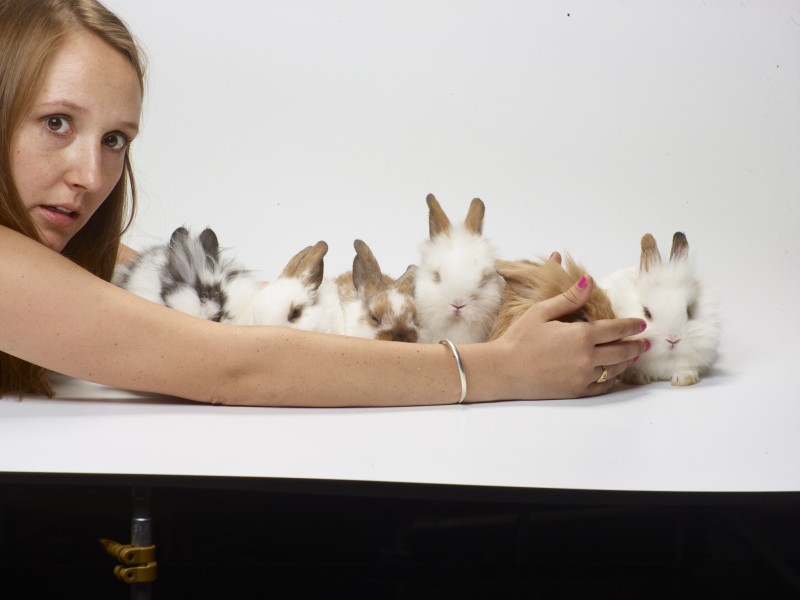

March 12, 2018
A Force of Nature—Happy Birthday, Finley

It’s Finley’s Birthday today, and so we begin our ‘Birthday to Earth Day’ gift to her—daily posts of things each of us can do to make the planet a little greener.
I like to muse that Finley left us a gift, or maybe more of a practical joke, to help our spirits through that first year without her. When we came home from the hospital without Finley, we were able to bring home Finley’s most beloved rabbit, Leo, from ‘his’ temporary residence at the neighbor’s. At the same time Callie brought home a rescue rabbit, Crumpet. And in the house full of family and heartache the two rabbits found each other. We soon discovered Leo was not a ‘he,’ but a ‘she,’ and the rabbits started coming. First it was 3. Then we learned that by the time a rabbit has a litter, she is already pregnant with the next batch. 6 more. Then we learned that it is very difficult to sex a young rabbit. 18 more. Then we learned even a vet cannot sex a young rabbit. More. And lastly we learned that even after neutered, rabbits are still fertile for a while. More and more. As each of these little puff balls arrived, we had mixed feelings of disaster and joy. Those cuddly little balls of life couldn’t help but help us through, and I had the feeling they were sent directly from Finely. She would do that if she could. The moral of this story: It is difficult to stop a force of nature.
Last year we rallied our courage as we knew we would face a difficult year for the planet. And we did. But my assessment of the year is that we’ve proved the movement to green our ways to be unstoppable—a literal force of nature—with more voices, more energy, more enthusiasm. We’re multiplying like Finley’s rabbits.
This year, our Birthday to Earth Day voices are coming from even more corners of the planet. Finley’s family and friends will be sharing posts about all the small and big things you can do to make a difference. And if you would give a gift to Finley this year, let some of these ideas become habits. And even better, share them with a friend, and let’s see how they multiply.
Photo of Finley’s sister, Callie, and a crop of descendants from Leo & Crumpet
Photo by Mark Thiessen / National Geographic Staff